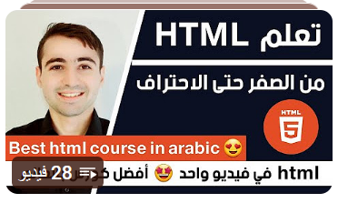
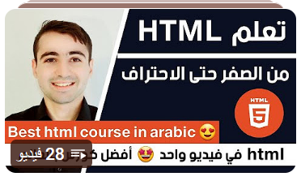

Html
HTML: لغة ترميز هيكلية تُستخدم لإنشاء صفحات الويب عبر تنظيم المحتوى بعناصر مثل العناوين والفقرات والصور.
HTML: لغة ترميز هيكلية تُستخدم لإنشاء صفحات الويب عبر تنظيم المحتوى بعناصر مثل العناوين والفقرات والصور.
CSS: لغة تنسيق تُستخدم لتصميم صفحات الويب عبر تحديد الألوان والخطوط والتخطيطات، مما يجعلها أكثر جاذبية وتناسقًا.
Bootstrap: إطار عمل مبني على HTML وCSS وJavaScript يُسهّل تطوير مواقع ويب متجاوبة وجميلة بسرعة عبر مكونات جاهزة.
JavaScript: لغة برمجة تُضيف التفاعل والديناميكية لصفحات الويب، مثل تحديث المحتوى بدون إعادة تحميل الصفحة.